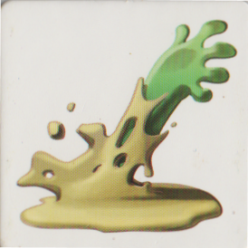

TITRE
Règles
Chaque joueur joue une colonie de grenouilles qui cherche à acquérir la suprématie de la mare en chassant les autres grenouilles.
Crôa est un jeu simple et tactique dans lequel vous devez prendre le contrôle d'une mare qui se dévoile au fur et à mesure du déplacement de vos grenouilles.
Apprenez à utiliser au mieux ses ressources : les mâles pour faire des bébés et agrandir votre colonie, les moustiques et les nénuphars pour vous déployer plus rapidement et les roseaux pour vous reposer.
Mais gare aux brochets et aux grenouilles adverses qui ne vous feront pas de cadeau !
But du jeu :
Pour gagner à Crôa, il faut être le dernier joueur à conserver sa Reine en jeu.
Comment jouer :
À votre tour, déplacez une de vos grenouilles vers une dalle adjacente. Retournez-la si elle est encore face cachée, et appliquez son "effet".
- S'il y a une Servante sur la même dalle que votre Reine, c'est l'une des deux que vous devez déplacer.
- Vous n'avez pas le droit d'aller sur une dalle occupée par une de vos grenouilles (sauf Rondin).
- Si vous arrivez sur une dalle occupée par une ou plusieurs Grenouilles adverses, vous les éliminez avant d'appliquer l'effet de la dalle.
- Si vous arrivez sur une dalle occupée par une Reine adverse, son joueur est éliminé. Vous gagnez une Servante (si vous n'en avez pas déjà 6) que vous posez sur la même dalle que votre Reine.
- Si vous déplacez votre Reine sur un Brochet vous êtes éliminé
Fin de partie :
Le gagnant est le dernier joueur qui possède sa Reine.
Les différentes cartes :
- Les grenouilles males :
- Le moustique :
- Le nénuphar :
- Les roseaux :
- La vase : 
- Le brochet :
- Le rondin
- Si une troisième Servante arrive sur le rondin, elle élimine la Servante de son choix.
- Une Reine qui arrive sur un Rondin élimine toutes les Servantes qui s'y trouvent.
- Une Reine est toujours éliminée par une grenouille adverse qui arrive sur le rondin où elle se trouve.
Permettent à la grenouille mère de s'accoupler pour creer une nouvelle grenouille.
Vous ne pourrez plus accoupler votre Reine avec ce dernier ou son jumeau.
Vous pouvez déplacer une autre de vos grenouilles en appliquant les effets de la dalle sur laquelle elle arrive.
Si vous décidez de ne pas déplacer d'autre grenouille, c'est au joueur suivant de jouer.
Votre grenouille rebondit sur une dalle adjacente de votre choix, dont vous appliquez l'effet.
Vous ne pouvez pas revenir sur la dalle que vous venez de quitter, sauf si toutes les dalles adjacentes sont déjà occupées par vos grenouilles.
Vous ne pouvez jamais rester sur un Nénuphar.
Rien ne se passe, c'est au joueur suivant de jouer.
Votre grenouille ne pourra pas être déplacée au tour suivant.
Votre grenouille est mangée. S'il s'agit de votre Reine, vous avez perdu, c'est au joueur suivant de jouer.
Il peut y avoir jusqu'à deux Servantes sur un rondin en même temps (même appartenant à des joueurs différents) ou une seule Reine.
C'est au joueur suivant de jouer.
Autres liens :
Lien wikipédia du jeu